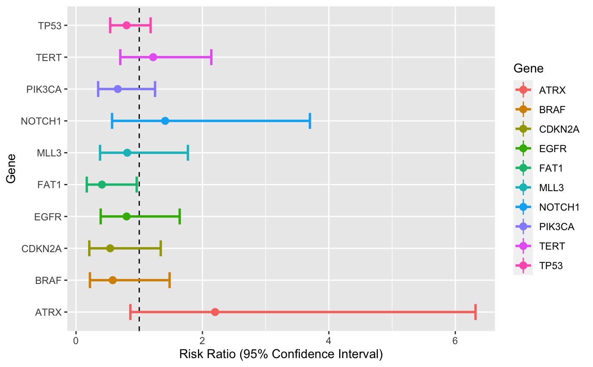
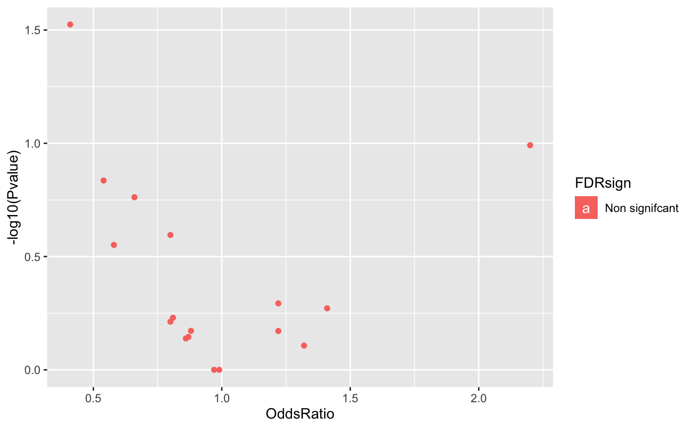

Creates a summary table of the distribution of the genetic features by a specific outcome/covariate of interest. The difference is tested using Fisher's exact test and further adjusted for multiple comparisons. Note that continuous genetic factors are dichotomized at their median.
gen.tab(gen.dat, outcome, filter = 0, paired = F, cont = F, rank = T)
| gen.dat | A matrix or dataframe, with patients as rows and features as columns. |
|---|---|
| outcome | A leveled vector of length equal to the number of rows in gen.dat. |
| filter | a numeric value between 0 and 1 (1 not included) that is the lower bound for the proportion of patients having a genetic event (only for binary features). All features with an event rate lower than that value will be removed. Default is 0 (all features included). |
| paired | Boolean if the data are paired. Default is FALSE. |
| cont | Should the outcome be treated as a continuous value. Default is FALSE treated as categorical. |
| rank | Should the table returned be ordered by Pvalue. Boolean, default is T |
fits : a table of odds ratio and pvalues.
forest.plot : A forest plot of the top 10 hits.
library(gnomeR) patients <- as.character(unique(mut$Tumor_Sample_Barcode)) ## binary outcome ## outcome <- as.character(clin.sample$Sample.Type[match(patients,clin.sample$Sample.Identifier)]) gen.dat <- binmat(patients = patients,maf = mut) gen.tab(gen.dat = gen.dat, outcome = outcome, filter = 0.05,paired = FALSE, cont = FALSE,rank = TRUE)#> Warning: geom_hline(): Ignoring `mapping` because `yintercept` was provided.#> $fits #> Feature Overall Metastasis(N=200) Primary(N=257) OddsRatio Pvalue #> FAT1 FAT1 6.13% 9% 3.89% 0.41 2.99e-02 #> ATRX ATRX 5.69% 3.5% 7.39% 2.2 1.02e-01 #> CDKN2A CDKN2A 5.25% 7% 3.89% 0.54 1.46e-01 #> PIK3CA PIK3CA 10.72% 13% 8.95% 0.66 1.73e-01 #> TP53 TP53 42.89% 46% 40.47% 0.8 2.54e-01 #> BRAF BRAF 5.03% 6.5% 3.89% 0.58 2.81e-01 #> TERT TERT 14.88% 13.5% 15.95% 1.22 5.09e-01 #> NOTCH1 NOTCH1 5.47% 4.5% 6.23% 1.41 5.35e-01 #> MLL3 MLL3 7.22% 8% 6.61% 0.81 5.89e-01 #> EGFR EGFR 8.53% 9.5% 7.78% 0.8 6.13e-01 #> KRAS KRAS 12.69% 13.5% 12.06% 0.88 6.73e-01 #> RB1 RB1 5.03% 4.5% 5.45% 1.22 6.74e-01 #> MLL2 MLL2 7% 7.5% 6.61% 0.87 7.16e-01 #> ARID1A ARID1A 7.88% 8.5% 7.39% 0.86 7.27e-01 #> ZFHX3 ZFHX3 3.06% 2.5% 3.5% 1.32 7.82e-01 #> ATM ATM 5.47% 5.5% 5.45% 0.99 1.00e+00 #> APC APC 7.88% 8% 7.78% 0.97 1.00e+00 #> FDR Lower Upper #> FAT1 5.08e-01 0.17 0.96 #> ATRX 7.35e-01 0.86 6.32 #> CDKN2A 7.35e-01 0.21 1.34 #> PIK3CA 7.35e-01 0.35 1.25 #> TP53 7.96e-01 0.54 1.18 #> BRAF 7.96e-01 0.22 1.48 #> TERT 8.83e-01 0.7 2.14 #> NOTCH1 8.83e-01 0.57 3.7 #> MLL3 8.83e-01 0.38 1.77 #> EGFR 8.83e-01 0.39 1.64 #> KRAS 8.83e-01 0.49 1.59 #> RB1 8.83e-01 0.48 3.27 #> MLL2 8.83e-01 0.4 1.93 #> ARID1A 8.83e-01 0.41 1.82 #> ZFHX3 8.86e-01 0.38 5.17 #> ATM 1.00e+00 0.41 2.47 #> APC 1.00e+00 0.46 2.06 #> #> $forest.plot#> #> $vPlot#>## Continuous outcome ## set.seed(1) outcome <- rnorm(n = nrow(gen.dat)) tab.out <- gen.tab(gen.dat = gen.dat, outcome = outcome, filter = 0.05,paired = FALSE, cont = TRUE,rank = TRUE) tab.out$fits#> Estimate SD Pvalue MutationFreq FDR #> TERT 0.25771092 0.12896408 0.04627708 0.14879650 0.6687127 #> BRAF 0.29107349 0.21041434 0.16724057 0.05032823 0.6687127 #> PIK3CA -0.19670254 0.14870787 0.18658472 0.10722101 0.6687127 #> RB1 -0.26959944 0.21047721 0.20088266 0.05032823 0.6687127 #> ATM -0.23702856 0.20240914 0.24219687 0.05470460 0.6687127 #> KRAS -0.13150580 0.13834524 0.34233114 0.12691466 0.6687127 #> EGFR 0.13080516 0.16488262 0.42800322 0.08533917 0.6687127 #> MLL2 0.13295169 0.18053747 0.46185367 0.07002188 0.6687127 #> CDKN2A 0.15020209 0.20653499 0.46744826 0.05251641 0.6687127 #> MLL3 -0.11928213 0.17800877 0.50313952 0.07221007 0.6687127 #> APC -0.11162773 0.17104091 0.51431953 0.07877462 0.6687127 #> TP53 -0.05910738 0.09310112 0.52583042 0.42888403 0.6687127 #> ZFHX3 -0.17243487 0.28163447 0.54096218 0.05982906 0.6687127 #> ARID1A -0.10214478 0.17105393 0.55070456 0.07877462 0.6687127 #> ATRX -0.09403244 0.19895900 0.63670938 0.05689278 0.7216040 #> FAT1 0.05765920 0.19219623 0.76431286 0.06126915 0.8120824 #> NOTCH1 0.03600625 0.20270690 0.85909483 0.05470460 0.8590948tab.out$vPlot#> #> #>#> Warning: `line.width` does not currently support multiple values.